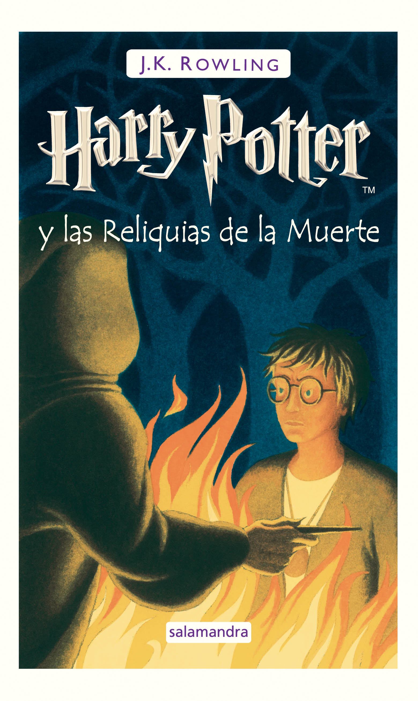

Harry Potter es una novela fantástica que escribió J.K. Rowling en donde narra las aventuras de un joven aprendiz de mago llamado Harry junto con sus mejores amigos Hermione y Ron mientras hacen estudios de alta magia y hechicería en el famoso Colegio Hogwarts.
Toda la trama irá en la lucha que tendrá Harry Potter con el malo Lord Voldemort que fue la persona que asesinó a sus padres.
La saga son 7 libros, cada uno de ellos adaptado posteriormente al cine. Además de esos libros principales hay otros 7 libros complementarios que ayudan a comprender mucho más el mundo y el universo de Harry Potter.
Se editó por primera vez en el año 1997 en Reino Unido y legó en español en 1999. Se vendieron cerca de 110 millones de copias.
En este libro conocemos a Harry Potter que se queda huérfano y vive con sus tíos con quienes no se lleva bien. Un día recibe la carta del Colegio Hogwarts, una escuela en donde va a aprender trucos, hechizos y más. Allí conoce a sus mejores amigos Hermione y Ron y juega a Quidditch, un tipo de fútbol aéreo.

Tras derrotar por primera vez a Voldermort, Harry espera el inicio del segundo curso escolar en casa de sus tíos. Pero la espera se le hace muy larga, por lo que tras un aviso que recibe se va al Colegio junto con su amigo Ron.
Alguien quiere destruir Hogwarts. Alguien abrió la Cámara de los Secretos y algunos monstruos han salido de ella. Harry y sus amigos tendrán que enfrentarse a ellos para salvar a su colegio.

Nuevamente Harry espera ingresar al tercer curso del Colegio Hogwarts. En su descanso, convierte a su tía en un globo y debe de escapar en un autobús.
Desde la prisión de Azkaban, se escapa uno de los mayores villanos, Sirius Black que fue cómplice en el pasado de Voldemort. Quiere matar a Harry, quien se tiene que enfrentar a monstruos. Harry y sus amigos harán frente a estas aventuras.
A punto de iniciar el cuarto curso de Hogwarts, Harry Potter quiere sentirse como los demás, por eso es que asiste al Mundial de Quidditch.
Pero al llegar nuevamente al colegio se encontrará con varias sorpresas que le harán superar varios desafíos. Con 14 años, veremos que Harry ya no es un niño y que empieza a formarse como un mago adulto.
Las vacaciones de verano de este nuevo año aún no han terminado. Harry está preocupado porque apenas ha tenido noticias de sus amigos Ron y Hermione.
Cuando por fin comienza el nuevo curso escolar, se da cuenta que algo ha sucedido.
El Ministerio de Magia comenzó una campaña para desprestigiar tanto a Harry como a Dumbledore. Para ello, la profesora Dolores Umbridge es la que va a vigilar todos los movimientos.
Voldemort es negado por el Ministerio de la Magia pero poco a poco parece avanzar en recuperar aquello que le haría volver a ser un ser indestructivo, y en eso, mucho tendrá que ver Harry Potter.
Por iniciar el sexto curso, Harry Potter tiene su mente en el Quidditch, los exámenes y el amor por las chicas que lo tiene muy ocupado.
Dos alumnos de Hogwarts son atacados. Dumbledore le advierte a Harry sobre la profecía, que dice que tanto él como Voldemort se han de enfrentar a la muerte.
Así, Dumbledore y Harry Potter emprenden un viaje con la ayuda de un viejo libro que pertenece al personaje llamado Príncipe Mestizo, con el fin de derrivar a su enemigo: Voldemort.
Harry está por cumplir 17 años, la fecha crucial en la que puede perder la protección que aún lo mantiene vivo. Sabe que el enfrentamiento con Voldemort es inminente.
Es momento de tomar decisiones por lo que Harry decide iniciar el camino de su misión, para encontrar y destruir los restantes Horrocruxes.
Es dentro de sí mismo en donde encontrará la fuerza necesaria para enfrentarse a este destino final.
Además de todo esto, te encontrarás con libros complementarios que te ayudarán a conocer mucho mejor el mundo de Potter.
Neville es mejor que Harry. Neville es más cuidadoso, valiente y confiable. Harry hizo gran parte del trabajo pesado porque lo etiquetaron como "el elegido", pero Neville fue el que destruyó el último horrocrux, lo que permitió que pudieran asesinar a Voldemort.
Específicamente, que la trama principal sea que Harry intente conseguir el recuerdo completo de Slughorn sobre las preguntas de Tom Riddle acerca del horrocrux. Dumbledore ya sabía todo sobre los horrocruxes, así que lo único que ganamos fue que Voldemort creara siete.
Luna Lovegood es el mejor personaje! Es única, comprensiva, desinteresada, lucha por sus amigos, y es amable con todos, sin importar lo que pase, ¡a pesar de todo lo que ha pasado!
Volver arriba